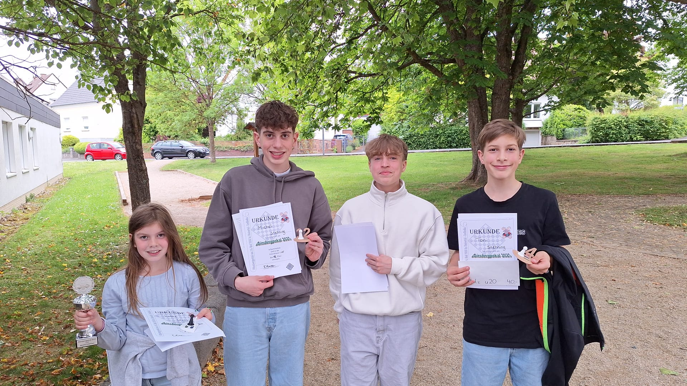
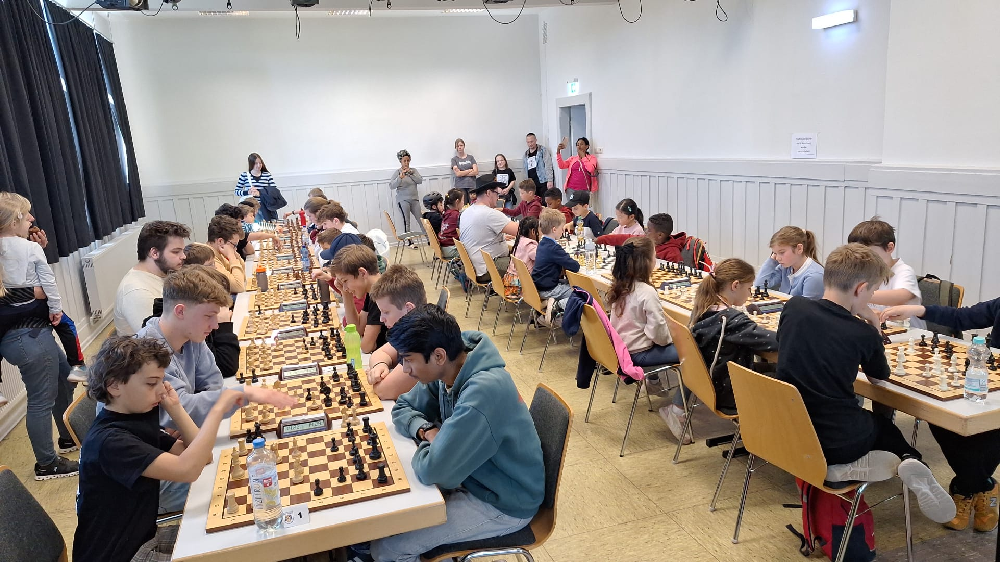
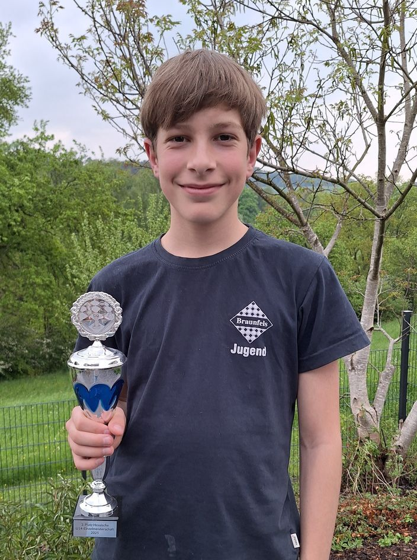

Jugend
Jugendtraining findet montags von 17:30 bis 19:00 im Haus
des Gastes (Raum Bagnol im Nebengebäude über
der Stadtbücherei) statt.
Unverbindliches Schnuppertraining für Kinder ab
sechs Jahren möglich.
+++ 02.-13.11.2026: Toni Stehning bei den Europäischen Meisterschaften +++

Toni Stehning, Jugendspieler der Schachfreunde
Braunfels, vertritt zur Zeit bei den
Schach-Europameisterschaften in Griechenland die
deutschen Farben. Die Meisterschaften finden von
2.-13.11. auf der Insel Kreta statt und werden in 9
Runden im Schweizer-System ausgetragen, bei 90 Minuten
pro Spieler und Partie. Gespielt wird in sechs
Altersklassen von U8 bis U18 wobei Toni in der
Altersklasse U14 startet. Sein Weg zu den
Europameisterschaften begann bei den hessischen
Meisterschaften wo er als Kaderspieler gesetzt war und
wo er Sieger seiner Altersklasse wurde, damit hatte er
sich für die deutschen Meisterschaften in
Willingen qualifiziert. Auch dort glänzte er durch
überragende Leistungen mit denen er sich auf
internationaler Ebene qualifizierte. 1250 Jungen und
Mädchen aus 49 Nationen beteiligen sich an dem
Turnier, angeführt wird die deutsche Delegation
von dem 18jährigen Großmeister Marius Deuer
der auch im gesamten Turnier in der Rangliste ganz oben
steht.
Von den neun zu spielenden Runden haben die Teilnehmer
bislang fünf Runden absolviert und Toni stellt
eindrücklich unter Beweis, dass er zurecht auf
internationaler Ebene eingesetzt ist. Dabei sind seine
Gegner fast durchweg teilweise deutlich höher
gesetzt als er, so konnte er gleich in der ersten Runde
gegen den Fidemeister Damir Bulgak (ELO 2317)
remisieren, in Runde zwei folgte dann eine Niederlage
aus der er aber scheinbar gestärkt heraus ging:
die drei folgenden Begegnungen gegen Wiktor Kiszik (ELO
1973, Polen), Guy Belkovski (ELO 2214, Israel) und
Viktor Lilliehook (ELO 2197, Schweden) konnte er
allesamt siegreich beenden. Zuletzt überzeugte er
mit einem Remis gegen den Fidemeister Ali Varyemez (ELO
2267, Türkei). Damit belegt er aktuell mit 4 aus 6
Punkten Rang 22, bei 65 Teilnehmern in seiner Gruppe.
Igor Shevchenko, der zweite Deutsche in der Gruppe,
belegt mit drei Punkten Rang 62.
Diverse Links:
Offizielle Turnierseite
Ergebnisse und
Tabellen
Vorbericht der European
Chess Union
Ergebnis Deutsche
Schachmeisterschaft 2026, U14
Bild 1: Toni Stehning am Brett. Im Hintergrund, von
links nach rechts: Sebastian Swoboda (1. Vorsitzender),
Joachim Schmidt (1. Stadtrat), Sabine Stehning
(Mutter), Ralf Stehning (Vater und Jugendleiter),
Christian Breithecker (Bürgermeister).
+++ Starker Auftritt bei den Hessischen Jugend-Einzelmeisterschaften +++

Bad Homburg. Bei den hessischen
Jugend-Einzelmeisterschaften in Bad Homburg, die vom
29. März bis zum 4. April stattfanden, zeigten
zahlreiche Nachwuchstalente ihr Können —
allen voran Toni Stehning, der in der Altersklasse U 14
für ein herausragendes Ergebnis sorgte. Über
mehrere Tage hinweg traten die besten Jugendlichen aus
ganz Hessen im Schach gegeneinander an, um die
begehrten Titel in ihren jeweiligen Altersklassen zu
erringen. Die Veranstaltung war geprägt von
spannenden Wettkämpfen, hoher Leistungsdichte und
großem sportlichem Ehrgeiz.
In der U14-Konkurrenz überzeugte Toni Stehning mit
einer konstant starken Leistung. Von insgesamt sieben
Partien konnte er vier gewinnen und spielte dreimal
Remis, womit er ungeschlagen blieb. Damit sammelte er
starke 5,5 Punkte aus 7 Spielen. Runde für Runde
setzte er sich gegen starke Gegner durch und bewies
dabei nicht nur sein spielerisches Talent, sondern auch
bemerkenswerte Nervenstärke. Besonders in
entscheidenden Momenten behielt er die Ruhe und konnte
enge Partien für sich entscheiden. Am Ende wurde
der Einsatz des Braunfelser Nachwuchsspielers belohnt:
Toni Stehning krönte sein Spiel mit einem ersten
Platz und ist Hessenmeister in der U14. Er
qualifizierte sich damit für die Deutschen
Jugendeinzelmeisterschaften im Schach, die vom 23. bis
31. Mai in Willingen stattfinden werden.
Doch auch ein weiterer Spieler von den Schachfreunden
aus Braunfels machte auf sich aufmerksam: Michel
Stehning zeigte in der Altersklasse U18 eine sehr
ansprechende Leistung. Mit konzentriertem Spiel und
großem Einsatz behauptete er sich in einem
starken Teilnehmerfeld und belegte am Ende einen
erfolgreichen 13. Platz, was seinen positiven
Turnierverlauf unterstreicht.
Die Hessische Schachjugend hat während der
gesamten Woche für eine ausgezeichnete
Organisation des Zentralen Lagers in Bad Homburg
gesorgt. Die angenehme Turnieratmosphäre und das
abwechslungsreiche Rahmenprogramm haben die hessischen
Einzelmeisterschaften zu einem Highlight gemacht.
Ebenso haben die Schachfreunde aus Braunfels u.a. mit
ihrer Jugendarbeit die schachlichen Erfolge ihrer
Nachwuchsspieler unterstützt.
Bericht von Ralf Stehning.
+++ Neues vom Einsteiger-Cup Mittelhessen +++

Am 17. August war der Beginn des Einsteiger-Cups,
nachdem er am 28. Juni vielversprechend getestet wurde.
Es haben sich 19 Spieler angemeldet, es gab also
fünf Gruppen á vier Spieler und ein
Freilos. Braunfels war mit Günter Hilgert, Lukas
Averianov und Wladislav Geist vertreten. Wladislav war
in der stärksten Gruppe und gewann eine Partie.
Lukas ging in beiden Partien als Sieger hervor.
Günter musste sich leider in beiden Spielen
geschlagen geben.
Am 27. September ging der Einsteiger-Cup in Braunfels
weiter. Für die Gastgeber spielten Günter
Hilgert, Guiseppe und Christian Kokoska. In Runde 1
spielten Günter und Guiseppe gegeneinander -
Günter ging als Sieger hervor, Christian verlor
seine Partie. In der zweiten Partie gingen alle drei
leider leer aus.
Am 1. November war Marburg der Austichter des
Einsteiger-Cups. Günter Hilgert und Wladislav
Geist gingen für Braunfels an den Start.
Während Günter beide Partien für sich
entscheiden konnte, hat Wladislav beide Partien
verloren.
Am 17. Januar fand im Kulturzentrum Hungen der erste
Spieltag des neuen Jahres statt. Mit Sam Droß,
Wladislav Geist und Guiseppe Totaro gab es drei
Braunfelser Teilnehmer. Während Sam gegen
Wladislav in der höchsten Gruppe gewann, konnte
Guiseppe auch einen Sieg einfahren. Leider gingen
Wladislav und Guiseppe in der nächste Partie leer
aus, Sam hingegen konnte auch das zweite Spiel für
sich entscheiden. Der nächste Termin ist am 07.
März in Heuchelheim.
+++ Jugendvereinsmeisterschaft 2025 +++
Lotte, Toni und Michel führen nach den ersten beiden
Runden das Turnier an. Die nächste Runde findet am
20. Oktober statt.
Ergebnisse der 2. Runde vom 29. September:
| Lotte Stehning | - | Andrii Kozoub | 1 - 0 |
| Toni Stehning | - | Joel Späth | 1 - 0 |
| Amely Maier | - | Michel Stehning | 0 - 1 |
| Nadja | - | Theo Gliem | 0 - 1 |
| Philip Schmidt | - | Kieran Lehnen | 0 - 1 |
| Timo Kozoub | - | Waldemar Skakowskij | 0 - 1 |
| Jonas Müller | - | spielfrei | + - - |
Ergebnisse der 1. Runde vom 22. September:
| Kieran Lehnen | - | Lotte Stehning | 0 - 1 |
| Philip Schmidt | - | Aaron Burk | 0 - 1 |
| Andrii Kozoub | - | Waldemar Skakowskij | 1 - 0 |
| Joel Späth | - | Timo Kozoub | 1 - 0 |
| Toni Stehning | - | Jonas Müller | 1 - 0 |
| Michel Stehning | - | spielfrei | + - - |
+++ Braunfels erfolgreich in der Jugendliga +++
Am 24. August war der Auftakt der Jugendliga im Bezirk. Braunfels siegte über Heuchelheim mit 3:1. Lukas, Aaron und Wladislav gewannen ihre Partien. Leonhard verlor am ersten Brett. In der zweiten Begegnung des Tages gewannen sie kampflos gegen Stadtallendorf.
Die zweite Doppelrunde fand eine Woche später am 31. August statt: Im ersten Spiel des Tages siegte die Mannschaft über Marburg II mit 4:0. Lukas, Aaron, Wladislav und Alexander gewannen ihre Partien. In der nächsten Runde ging das Team gegen Marburg I mit 0:4 unter.
Im letzten Spiel gewinnt Braunfels kampflos gegen Gladenbach. Damit landet Braunfels auf dem zweiten Platz. Marburg I gewinnt die Jugendliga und Heuchelheim wird Dritter.
Mehr Infos hier.
+++ Starke Leistung der Braunfelser Jugend beim Dünsbergpokal +++

Am 24. Mai haben Leonhard Buchheim, Lotte, Michel und Toni Stehning beim Dünsbergpokal in Biebertal teilgenommen. Lotte wurde in der U10 mit Platz sieben bestes Mädchen. Leonhard holte bei seinem ersten Turnier in der U16 gleich vier Punkte aus sieben Partien. Toni erreichte den zweiten Platz in der U20. Michel erspielte sich in der U25 dreieinhalb Punkte.
+++ Braunfelser Jugend beim Bezirks-Jugendschnellschachopen +++

Am 10. Mai fand in Hungen das Jugendschnellschachopen
des Bezirk Lahn-Eder statt.
Bei insgesamt 44 Teilnehmern wurde in einer Gruppe,
aber mit getrennter Altersgruppenwertung gespielt. Von
Braunfels spielten Toni, Michel und Lotte Stehning
sowie Wladislav Geist mit. Toni erreichte im
Gesamtranking den dritten Platz und gewann damit die
U14, Michel wurde mit dem fünften Gesamtplatz
Dritter in der U20.
+++ Hessische Jugendeinzelmeisterschaften U14 in Bad Homburg +++

Einen hervorragenden dritten Platz erkämpfte sich Toni Stehning bei den diesjährigen hessischen Jugendeinzelmeisterschaften vom 6. bis 12. April in Bad Homburg. Mit drei gewonnen Partien nebst zwei Remisen landete er, an Nummer fünf gesetzt, auf dem dritten Rang und konnte sich damit noch verbessern. Er qualifizierte sich somit wieder für die deutschen Meisterschaften, die vom 7. bis 15. Juni in Willingen stattfinden.